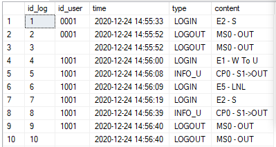
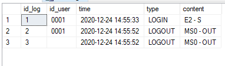

Syntax: DATEPART ( datepart , date )
EXAMPLE
Not use Datepart: SELECT * FROM LOG

Use Datepart: SELECT * FROM LOG where DATEPART(year,[time]) = DATEPART(year, '2020-12-24 14:55:33')
and DATEPART(month,[time]) = DATEPART(month, '2020-12-24 14:55:33')
and DATEPART(day,[time]) = DATEPART(day, '2020-12-24 14:55:33')
and DATEPART(hour,[time]) = DATEPART(hour, '2020-12-24 14:55:33')
and DATEPART(minute,[time]) = DATEPART(minute, '2020-12-24 14:55:33')

Reference documents: Microsoft.com